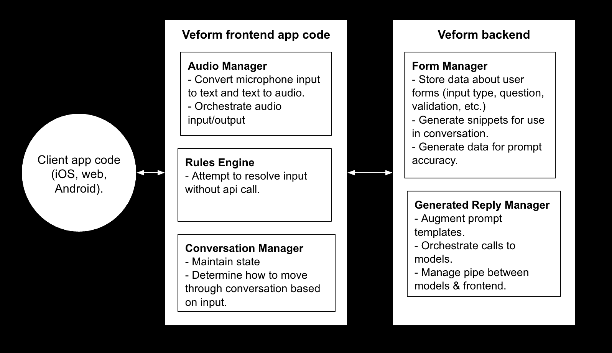

Speech-to-text, text-to-speech, llm pipelines and managing conversation state is a pain (trust us). Veform is here to simplify the whole process without forcing you to compromise your vision or rework your existing input logic.
The value offer here is simple. This is a pain to implement and maintain yourself, there are many pitfalls and uncertainties. This could either be a months long project across multiple platforms that needs to be maintained and updgraded into the future or a few hours one time setup with Veform.
Why not just do it myself?
- Additional services need to be created. You will need to support and maintain websockets or SSE connections.
- Speech-to-text is simple on the surface, but complex in practice and difficult to orchestrate around audio output.
- No need to self-host or manage infrastructure for LLMs.
- Easily add to iOS, web and Android apps for a unified experience, no need to write 3X implementations.
Conversations are not deterministic or consistent, audio input/output is not easy to get reliable and fluid. Let us sink deep into the weeds on those topics so you can build focus on your users.
Installation
Download the library lol
High level architecture
To make things fully transparent here is what Veform is doing under the hood. Each of these pieces seems simple, but is packed with complexity to handle and smooth over all the edge cases that can occur. Audio input/output, websockets and LLM generated replies is a lot of moving pieces to prioritize and organize in a way that feels natural for users.
